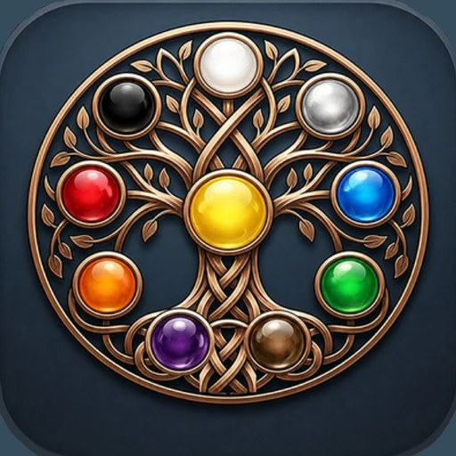
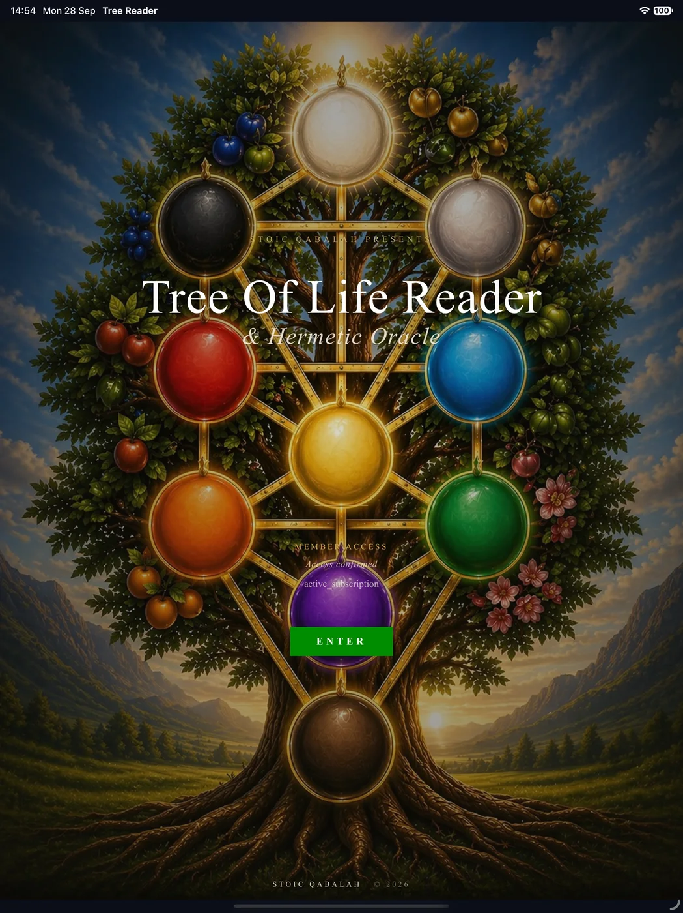
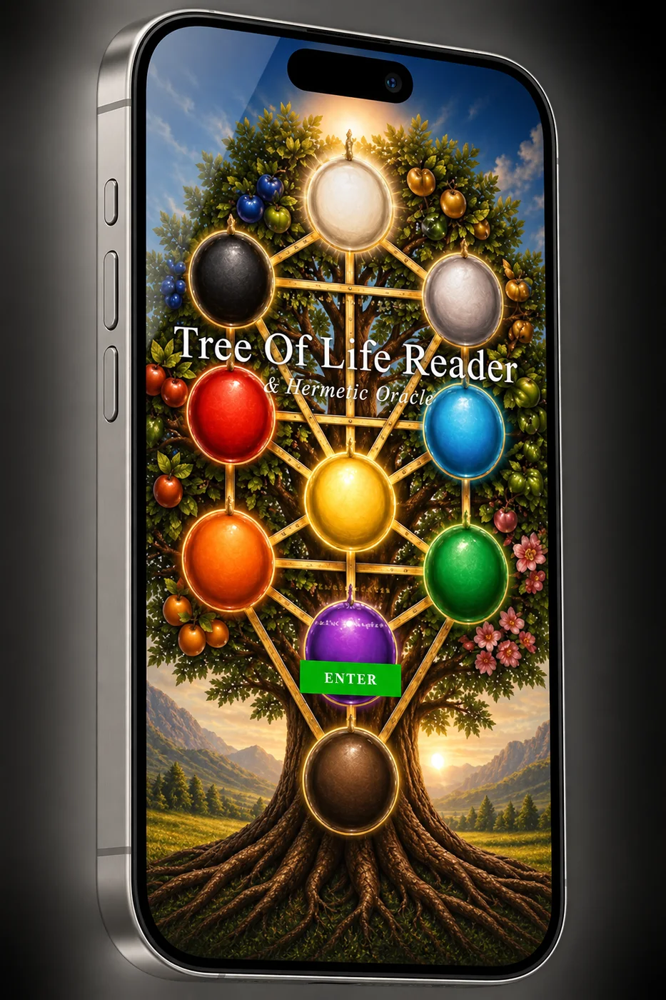
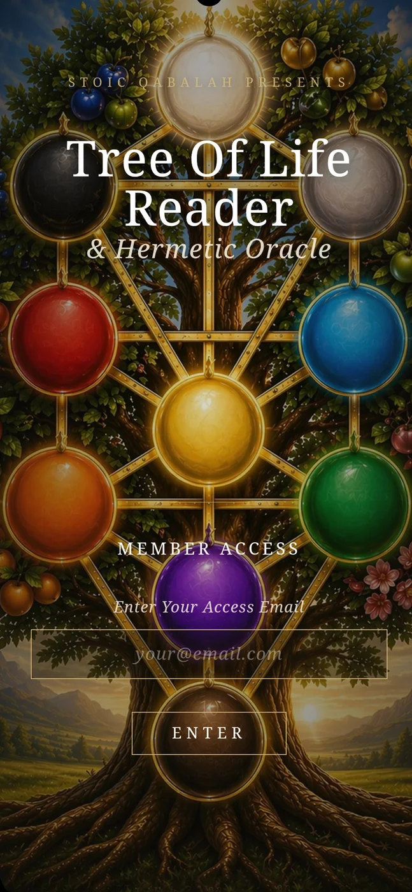
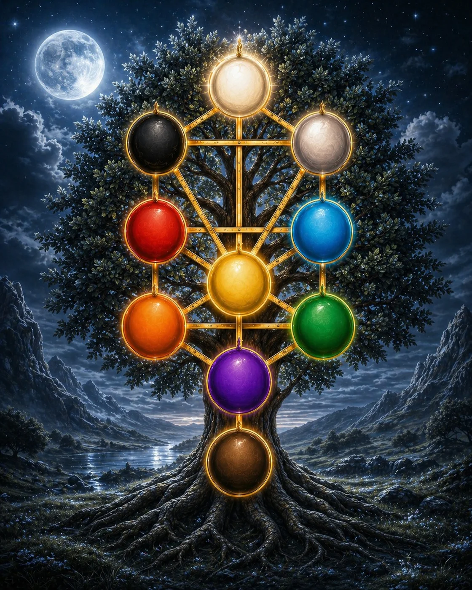
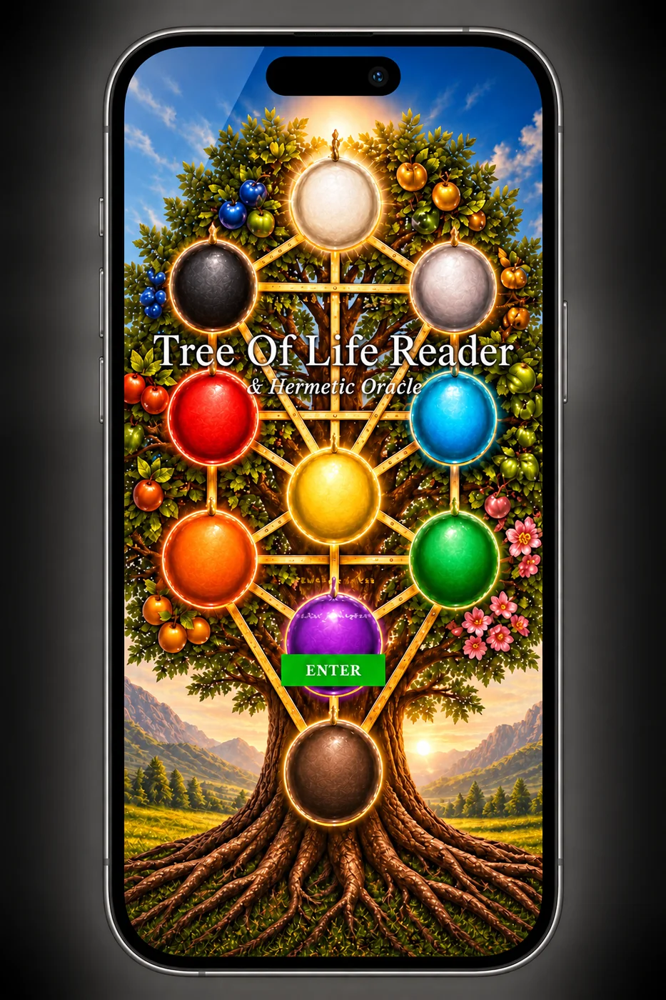

Mobile app
Tree of Life Reader
& Hermetic Oracle
Stoic Qabalah
Free trial3 days
AccessAll features
PlatformsAndroid · Web
Created withCathy Stronach





About this app
Your birth chart, on the Tree of Life.
The app places your astrological birth chart upon the Qabalistic Tree of Life and reveals the personal pattern it forms: a symbolic mirror of the spheres, the planetary influences that light them, and the changing transits moving through your life now.
It is not another daily horoscope, and it is not a tarot deck. It is a personal, chart-grounded reading, created with professional astrologer Cathy Stronach. No prior knowledge is needed; the Reader explains as it goes.
- Your TreeYour birth chart placed on the spheres of the Tree of Life, one by one.
- Weekly TransitsCurrent planetary movements interpreted through your personal Tree.
- The Hermetic OracleBring questions about the path ahead, the heart, or what lies within your control.
- A private JournalGather your reflections and what you notice as you experience the Tree.
- Stoic passagesBrief guidance from Marcus Aurelius, Seneca and Epictetus to steady each reading.
- Saved readings and a glossaryDeepen your understanding over time.